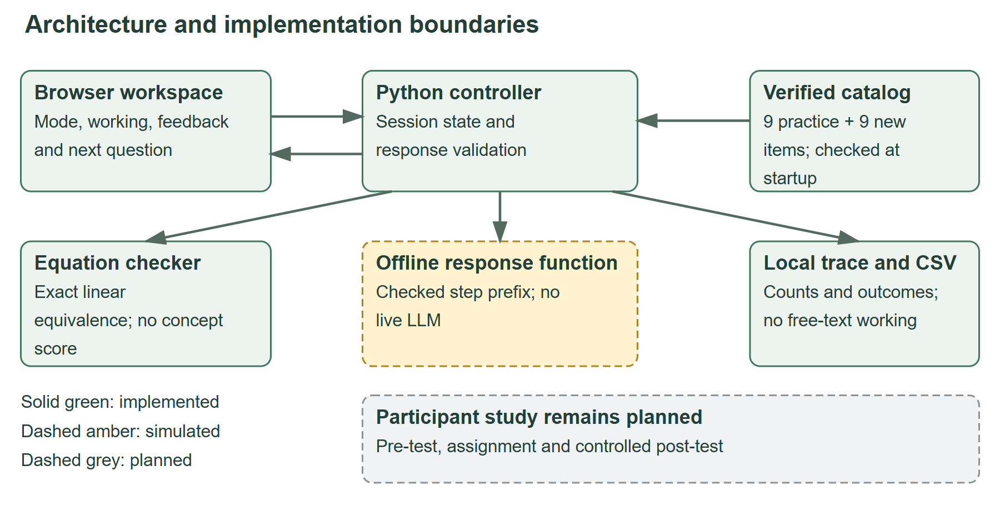
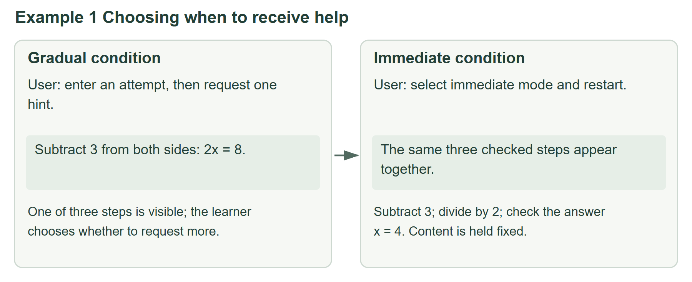
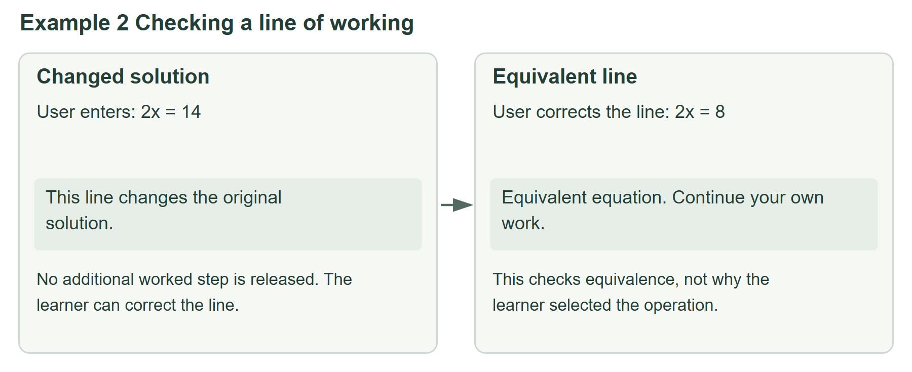
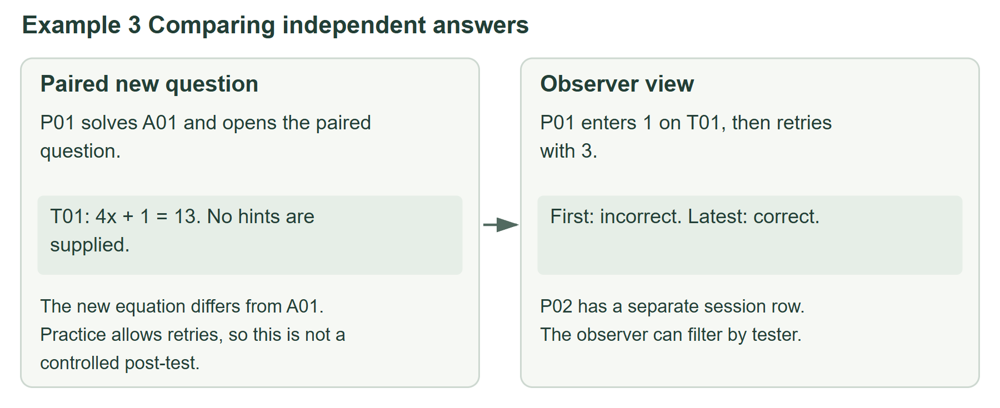

Controlled Help in an Algebra Tutoring Prototype
Word count: 1188 total (124 abstract, 1064 main text including headings and disclosures).
Abstract
How much help should a tutor give a student who is halfway through an equation? This local browser tutor offers two ways to work through the same algebra problem. Students can submit a first attempt and reveal one step at a time, or open the complete worked example at the start. Thirteen practice equations each have a different question for independent practice. Four harder pairs cover common denominators, nested brackets and decimal coefficients. The program checks whether a submitted equation has the same solution as the original and lets the student revisit earlier hints. A local response function delivers the worked steps. Development tests checked the mathematics and the interaction. Whether either mode helps students solve a new equation independently remains an open question.
学生解方程遇到困难时，助手应该给多少帮助？本机网页提供两种方式：先提交一次尝试，再逐步展开提示；或一开始查看同一道题的完整解法。13 道练习各配一道独立题，其中 4 组挑战题涉及公分母、嵌套括号和小数系数。程序检查学生的方程是否保留了原解，已看过的步骤可以回看。步骤由本机程序提供。开发测试核对了数学与交互，哪种模式更有助于独立解新题仍需研究。
Problem and scope
A1 asked whether students who attempt a problem before seeing help can later solve a related problem independently. Koedinger and Aleven (2007) describe the difficulty of deciding when to give information and when to leave the next move to the learner. The intended users here are university students revising algebra. For a student who can already solve a two-step equation mentally, opening a hint says little about the value of the help. The harder items give that student a reason to pause, particularly when a minus sign applies to an entire bracket.
A1 关注学生能否在获得帮助前先尝试，并在随后独立解相似题。Koedinger 和 Aleven（2007）讨论了何时给信息、何时留给学生自己思考的难题。目标用户是复习代数的大学生。对能够心算两步方程的人，是否打开提示很难说明帮助是否有用。因此新增了需要处理括号前负号等细节的题目。
The prototype grew out of the Lab4 tutor. In a later trial, image import read only the final number in a screenshot of a simple equation. That left the learner correcting the transcription before they could try any algebra. Returning to a fixed catalogue keeps the equation identical across help modes. It also makes an error easier to locate: the author can check the question, the learner’s line and the next hint against one another. The original lab and its reuse are documented in the project’s provenance record.
原型从 Lab4 助手发展而来。试验图片导入时，系统只读出了简单方程截图最末的数字。学生做代数前先得修正识别结果。因此回到固定题库，让两种帮助模式使用同一条方程，便于逐项核对原题、学生输入和下一条提示。项目记录了原实验及复用内容。
Design choices and supporting evidence
Both modes use the same authored solution. In gradual mode, submitting an attempt unlocks the first hint. Students decide when to request each subsequent step. Immediate mode displays the whole sequence at once. Atkinson, Renkl and Merrill (2003) studied the transition from examples to independent problem solving using fading and self-explanation prompts. The present tutor changes when steps appear. Sale and Muldner (2019) found no significant overall difference between the two kinds of algebra hint they tested. These studies leave room for either outcome in a comparison of the present modes.
两种模式共用同一套解法。渐进模式要求先尝试，再按需逐步查看；完整例题模式一次展示全部步骤。Atkinson 等（2003）研究了逐步撤除示例步骤和自我解释提示，本助手改变的是显示时机。Sale 和 Muldner（2019）的代数实验中，两种提示的总体差异未达显著，不能预先断定本系统哪种模式更有效。
A learner clearing denominators may want to check the multiplier while expanding the next bracket. Earlier steps therefore stay on screen. This applies the Week 2 discussion of working memory and information held in the interface (University of Birmingham, 2026). The cost of gradual release is an extra action for each hint. A student who wants to inspect the whole derivation can choose the worked example before starting. Changing the help mode starts a fresh record so that the two kinds of practice can be inspected separately.
学生去分母后展开括号时，可能需要回看此前乘的倍数。因此之前的步骤会保留，呼应第 2 周有关工作记忆和界面承载信息的讨论。渐进提示的代价是每看一步都要点击。想看完整推导的学生可在开始前选择完整例题。切换模式后重新开始记录，以区别两种练习。
Design choices continued
The checker tests a narrow mathematical claim. For example, on A10 the learner can enter “Multiply both sides by 12” followed by a colon and the new equation. The program reads the equation after the colon and compares its unique rational solution with the original. An incorrect verbal explanation could still accompany an equivalent equation. Kim et al. (2009) distinguish procedural and conceptual outcomes in their comparison of tutoring and worked examples. Assessing a student’s justification would require a separate task and a marking rubric.
检查器只判断特定数学结论。例如 A10 可以在冒号前写“两边乘以 12”，再输入方程。程序比较新旧方程唯一的有理数解。即使方程同解，文字解释仍可能有错。Kim 等（2009）区分了程序性和概念性学习结果；评价理由需要另外设计任务和评分标准。
Amershi et al. (2019) recommend making system capabilities clear and supporting correction. An incomplete equation produces a prompt to edit it. A well-formed step that changes the solution produces different feedback: the student can revisit the signs or check that the same operation was applied to both sides. Neither action opens a hint. Students can also record a short explanation and continue. The comparison setting allows equation feedback to be switched off for both groups if the study concerns only the presentation of help.
根据 Amershi 等（2019）关于能力说明和纠错的设计建议，系统对缺项方程和改变原解的步骤给出不同反馈。学生可以检查符号和等式两边的操作，或仅记录思路。检查不会自动展开提示。若研究只关注提示的呈现方式，两组都可关闭方程反馈。
Architecture and interaction
Figure 1 follows a request from the browser to the local controller. The controller checks the selected problem, looks up its authored steps and asks the simulated response function for the permitted portion. It checks the returned sequence before displaying it. A missing or malformed response leaves earlier hints available. This implements the Week 3 distinction between giving a model instructions and enforcing the allowed output in the application (University of Birmingham, 2026). The browser offers English or bilingual English–Chinese labels for the same exercises.
图 1 展示从浏览器到本机控制器的流程。控制器核对题目，读取预编步骤，向模拟响应函数请求允许展示的部分，并验证返回序列。若响应缺失或有误，之前的提示仍可查看。这体现了第 3 周对模型指令与程序输出约束的区分。界面可切换纯英文或英中对照。
Figures 2–4 show three interactions using the shorter equations. The same sequence also works on A10. Multiplying its three fractions by twelve gives 3(3x − 2) − 2(x + 1) = 4(x − 1). The negative multiplier on the second bracket is easy to miss. The student can check that line before revealing the expansion. After the final answer, 4/3, the tutor offers T10. Its coefficients and solution differ, so copying the practice answer will fail.
图 2–4 用基础题展示三种交互。A10 也走相同流程。两边乘 12 后得到 3(3x − 2) − 2(x + 1) = 4(x − 1)，第二个括号的负号容易漏。学生可先检查这一步，再看展开提示。得出 4/3 后，可以尝试系数和答案均不同的 T10。

Figure 1. Implemented controls, the simulated tutor boundary and the planned participant study.
Illustrated interaction

Figure 2. One requested hint and the immediate solution use the same checked content.

Figure 3. Equation feedback flags a changed solution and recognises a corrected equivalent line.

Figure 4. Unaided practice and an actual trace export are demonstrated separately from research outcomes.
Development evidence and limits
The tutor records which condition was selected, how many hints were opened, whether a checked line preserved the solution and the outcome of each valid answer check. The student can download the current session as a CSV. A random identifier links events within a session. Saved files omit the student’s free-text working. Timing starts at the first recorded event and excludes time spent choosing the question or help mode.
系统记录帮助模式、提示数、方程是否同解及有效答案的结果。学生可下载本次练习的 CSV。随机编号关联同一次会话的事件。保存文件不含学生的文字草稿，计时从第一个记录事件开始，选题与选模式的时间不包括在内。
The catalogue is checked at startup. Each authored intermediate equation must preserve the original solution, and the final substitution must balance. This matters on A13, where multiplying through by twelve still leaves brackets to expand. A plausible final fraction would be poor reassurance if the hint immediately before it contained a sign error. The checker verifies both the practice answer and the independently authored partner’s answer.
程序启动时核对每个中间方程与原题是否同解，并检查最后的代入等式。A13 乘 12 后仍有括号要展开，因此即使最终答案看似合理，也要验证之前每一步的符号。练习题与独立配对题的答案都会核验。
All 41 unit tests passed. A browser walkthrough then exercised each of the four new pairs. It submitted a labelled intermediate step, requested one hint, entered an incorrect final answer and corrected it. It also checked the paired independent answer and opened the complete solution in immediate mode. These runs establish what the software did with known inputs. They provide no observations of how students chose strategies or used hints.
41 项单元测试全部通过。浏览器逐组检查了四组新增题，提交带说明的步骤、请求提示、试错后改正，验证独立题答案并查看完整例题。这些是已知输入下的软件运行记录，尚未观测真实学生如何选策略或使用提示。
Bastani et al. (2025) measured performance after assistance was withdrawn. Their distinction matters here because students can retry the independent exercise and receive immediate feedback. A study would need to record a first unaided response under agreed conditions, assess prior knowledge and assign the help mode before practice. The challenge pairs also need piloting with the intended learners. Their extra algebraic steps are verified. Their difficulty for that population, and any effect on later learning, remain to be measured.
Bastani 等（2025）研究了撤除帮助后的表现。本系统独立题允许重试并立即反馈。正式研究需统一条件、记录第一次独立答案、测量先验知识并预先分配模式。挑战组增加的代数步骤已核对，实际难度以及对后续学习的影响还需试验。
AI assistance
OpenAI Codex assisted with implementation, exercise drafting, software checks and report editing. The authored steps were checked by exact arithmetic and the new practice flows were exercised in a browser. The examples in the development record come from these runs.
OpenAI Codex 协助实现、出题、软件检查及报告编辑。预编步骤经精确运算核对，新增流程经浏览器实测。开发记录中的例子来自这些运行。
Repository and submitted version
Local application revision c887f9f on the algebra-only branch. The README gives run instructions and links to the development record. Public repository and README URLs are outstanding.
本机应用版本为 algebra-only 分支的 c887f9f。README 提供运行方法和开发记录。公开仓库及 README 链接仍待补入。
References
Amershi, S. et al. (2019). Guidelines for human–AI interaction. Proceedings of the 2019 CHI Conference on Human Factors in Computing Systems, pp. 1–13. https://doi.org/10.1145/3290605.3300233
Atkinson, R. K., Renkl, A. and Merrill, M. M. (2003). Transitioning from studying examples to solving problems: Effects of self-explanation prompts and fading worked-out steps. Journal of Educational Psychology, 95(4), pp. 774–783. https://doi.org/10.1037/0022-0663.95.4.774
Bastani, H. et al. (2025). Generative AI without guardrails can harm learning: Evidence from high school mathematics. Proceedings of the National Academy of Sciences, 122(26), e2422633122. https://doi.org/10.1073/pnas.2422633122
Kim, R. S., Weitz, R., Heffernan, N. T. and Krach, N. (2009). Tutored problem solving vs. “Pure” worked examples. Proceedings of the 31st Annual Meeting of the Cognitive Science Society, pp. 3121–3126. https://escholarship.org/uc/item/35w4h4zt
Koedinger, K. R. and Aleven, V. (2007). Exploring the assistance dilemma in experiments with Cognitive Tutors. Educational Psychology Review, 19(3), pp. 239–264. https://doi.org/10.1007/s10648-007-9049-0
Sale, K. and Muldner, K. (2019). Learning with an algebra computer tutor: What type of hint is best? Proceedings of the 41st Annual Meeting of the Cognitive Science Society, pp. 2708–2714. https://escholarship.org/uc/item/8gv8k0t5
University of Birmingham (2026). Intelligent Interactive Systems lecture materials: Week 2 Lecture 05 and Week 3 Lecture 09. https://canvas.bham.ac.uk/courses/90253/modules